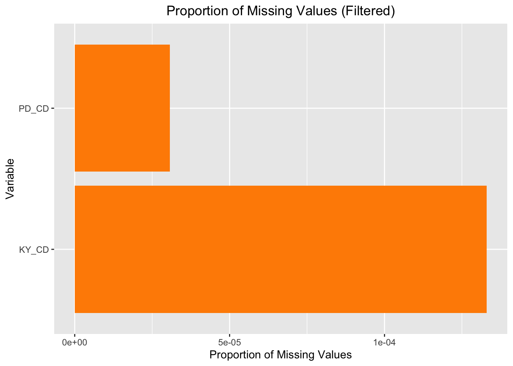

For this project, the dataset we used is NYPD_Arrest_Data_Year_to_Date_.csv, which provides detailed records of arrests made by the New York City Police Department (NYPD) within the current year, specifically from 2024/01/01 to 2024/09/30. Each record includes information such as the type of crime, location, time, and suspect demographics, offering an opportunity to analyze trends in police enforcement activity.
Data Collection and Updates:
Originally collected and maintained by the NYPD, extracted and reviewed by the Office of Management Analysis and Planning(OMAP), the primary evaluation and assessment arm and “think tank” of NYPD.
Updated quarterly.
Format and Dimensions:
The dataset is in CSV format.
It includes fields such as the arrest date, type and level of crime, location coordinates, and demographic details (e.g., age, race, sex).
Issues/Problems:
Missing values in certain fields due to historical changes in data collection forms or unavailable information at the time of reporting.
Geo location data may not be accurate: data on certain arrests (e.g., those on moving trains or in parks) is approximated to nearby coordinates, and those arrests who were not able to be geo-coded have been located as occurring at the police station house within the precinct of occurrence.
Some arrests do not have a specific law codes due to the huge amount of laws, so some records are categorized under generic or broad law codes (e.g., “LOC00000UM”).
Transcription errors may result in inconsistencies in nominal data.
Data Import & Source:
The data was collected from NYPD Arrest Data (Year to Date) on Data.Gov (https://catalog.data.gov/dataset/nypd-arrest-data-year-to-date), which is a national open data platform that provides access to datasets published by agencies across the government.
As mentioned before, the dataset was actually rearranged and extracted from the original data & report from NYPD, but the original data is not publicly available by NYPD.
Considering that the data source Data.Gov is an official government data website, we have reason to believe in the authenticity and accuracy of the data.
2.2 Missing value analysis
We first take a look at what does the data look like and its structure:
Code
library(tidyverse)
── Attaching core tidyverse packages ──────────────────────── tidyverse 2.0.0 ──
✔ dplyr 1.1.4 ✔ readr 2.1.5
✔ forcats 1.0.0 ✔ stringr 1.5.1
✔ ggplot2 3.5.1 ✔ tibble 3.2.1
✔ lubridate 1.9.3 ✔ tidyr 1.3.1
✔ purrr 1.0.2
── Conflicts ────────────────────────────────────────── tidyverse_conflicts() ──
✖ dplyr::filter() masks stats::filter()
✖ dplyr::lag() masks stats::lag()
ℹ Use the conflicted package (<http://conflicted.r-lib.org/>) to force all conflicts to become errors
We found that the raw dataset contains 195447 obs (rows). of 19 variables (cols), with more detailed variable information provided in the source website:
ARREST_KEY: Randomly generated persistent ID for each arrest
ARREST_DATE: Exact date of arrest for the reported event
PD_CD: Three digit internal classification code (more granular than Key Code)
PD_DESC: Description of internal classification corresponding with PD code (more granular than Offense Description)
KY_CD: Three digit internal classification code (more general category than PD code)
OFNS_DESC: Description of internal classification corresponding with KY code (more general category than PD description)
LAW_CODE: Law code charges corresponding to the NYS Penal Law, VTL and other various local laws
LAW_CAT_CD: Level of offense: felony, misdemeanor, violation
ARREST_BORO: Borough of arrest. B(Bronx), S(Staten Island), K(Brooklyn), M(Manhattan), Q(Queens)
ARREST_PRECINCT: Precinct where the arrest occurred
JURISDICTION_CODE: Jurisdiction responsible for arrest. Jurisdiction codes 0(Patrol), 1(Transit) and 2(Housing) represent NYPD whilst codes 3 and more represent non NYPD jurisdictions
AGE_GROUP: Perpetrator’s age within a category
PERP_SEX: Perpetrator’s sex description
PERP_RACE: Perpetrator’s race description
X_COORD_CD: Midblock X-coordinate for New York State Plane Coordinate System, Long Island Zone, NAD 83, units feet (FIPS 3104)
Y_COORD_CD: Midblock Y-coordinate for New York State Plane Coordinate System, Long Island Zone, NAD 83, units feet (FIPS 3104)
Latitude: Latitude coordinate for Global Coordinate System, WGS 1984, decimal degrees (EPSG 4326)
Longitude: Longitude coordinate for Global Coordinate System, WGS 1984, decimal degrees (EPSG 4326)
New.Georeferenced.Column: Point coordinate in the form of (Longitude, Latitude)
missing_summary_df <-data.frame(Variable =names(missing_summary), Missing_Count =as.numeric(missing_summary))# Create a small table of variables with missing valuesmissing_table <- missing_summary_df %>%filter(Missing_Count >0)print(missing_table)
Variable Missing_Count
1 KY_CD 26
2 PD_CD 6
We can see that most columns do not contain missing values, except for KY_CD and PD_CD, both of which are 3 digit internal classification code to categorize the type of the arrest, but the missing values only count for a tiny portion of the whole dataset.
We can then visualize the missing values using several graphs for clarity:
Code
# Filter for variables with missing values onlymissing_summary_df$Missing_Proportion <- missing_summary_df$Missing_Count /nrow(raw_data)missing_summary_filtered <- missing_summary_df %>%filter(Missing_Proportion >0)# Horizontal bar plot for variables with missing valuesggplot(missing_summary_filtered, aes(x =reorder(Variable, -Missing_Proportion), y = Missing_Proportion)) +geom_bar(stat ="identity", fill ="darkorange") +coord_flip() +labs(title ="Proportion of Missing Values (Filtered)", x ="Variable", y ="Proportion of Missing Values")+theme(plot.title =element_text(hjust =0.5))

This plot shows the proportion of missing values for variables that have missing data (PD_CD and KY_CD), highlighting that KY_CD has a slightly higher proportion of missing values compared to PD_CD, but both of which are extremely low overall.
Code
# install.packages("naniar")library(naniar)# use gg_miss_upset for UpSet graphgg_miss_upset(raw_data)
This UpSet Plot shows the intersection of missing values among the variables KY_CD and PD_CD: 6 records have missing values in both KY_CD and PD_CD; and KY_CD has 20 extra missing values in total.
We can also go further to investigate underlying pattern of missing values using other variables, e.g.: geographic location & demographic information.
Code
# Analyze missing value by Boroughmissing_by_boro <- raw_data %>%mutate(KY_CD_Missing =is.na(KY_CD)) %>%group_by(ARREST_BORO) %>%summarise(Missing_Rate =mean(KY_CD_Missing))ggplot(missing_by_boro, aes(x = ARREST_BORO, y = Missing_Rate)) +geom_bar(stat ="identity", fill ="steelblue") +labs(title ="Missing Rate by Borough", x ="Borough", y ="Missing Rate")+theme(plot.title =element_text(hjust =0.5))
Code
# Analyze missing value by demographic featuremissing_by_demo <- raw_data %>%mutate(KY_CD_Missing =is.na(KY_CD)) %>%group_by(AGE_GROUP, PERP_SEX, PERP_RACE) %>%summarise(Missing_Rate =mean(KY_CD_Missing)) %>%arrange(desc(Missing_Rate))
`summarise()` has grouped output by 'AGE_GROUP', 'PERP_SEX'. You can override
using the `.groups` argument.
Code
ggplot(missing_by_demo, aes(x = AGE_GROUP, y = Missing_Rate, fill = PERP_SEX)) +geom_bar(stat ="identity", position ="dodge") +labs(title ="Missing Rate by Age and Sex", x ="Age Group", y ="Missing Rate")+theme(plot.title =element_text(hjust =0.5))
2.3 Data Cleaning
There seems to be some slight patternunderlying the missing values, especially when we consider the the age variable, but as we mentioned in section 2.1, these missing values may due to historical changes in data collection forms or unavailable information at the time of reporting. Also, considering the extremely small percentage of missing values, we choose to directly delete all rows with missing values.
Code
# Remove all rows with missing valuesdata <-na.omit(raw_data)# Check the number of rows before and after removing missing valuescat("Number of rows before cleaning:", nrow(raw_data), "\n")
Number of rows before cleaning: 195447
Code
cat("Number of rows after removing missing values:", nrow(data), "\n")
Number of rows after removing missing values: 195421
Code
# Verify the data no longer contains missing valuessum(is.na(data))
[1] 0
Code
# calculate number of unique value for each variableunique_counts <-sapply(data, function(x) length(unique(x)))unique_counts_df <-data.frame(Variable =names(unique_counts), Unique_Count = unique_counts)unique_counts_df <- unique_counts_df[order(-unique_counts_df$Unique_Count), ]unique_counts_df
For further analysis and visualization purpose, there are some variables that we can remove from the dataset and will not cause any inconvenience. Here are the reasons:
ARREST_KEY
This is a randomly generated unique identifier for each record. It does not carry any analytical or statistical value and is irrelevant for data analysis or visualization.
Y_COORD_CD & X_COORD_CD
These variables represent geographic coordinates in the NAD 1983 system. Since the dataset already includes Latitude and Longitude (which are more universally understood and used), these fields are redundant and were removed.
Latitude & Longitude
These fields are redundant because the New.Georeferenced.Column variable already combines them into a (Longitude, Latitude) format. If geographic mapping is needed later, New.Georeferenced.Column will be sufficient.
LAW_CODE
This variable contains detailed law codes, which have too many categories (1044 as seen from above) to be useful for most visualizations or analyses. Instead, the LAW_CAT_CD variable, which provides broader categories (felony, misdemeanor, violation), is more practical and will be used.
Code
# Remove unnecessary variablesdata_cleaned <- data %>%select(-ARREST_KEY, -Y_COORD_CD, -X_COORD_CD, -LAW_CODE, -Latitude, -Longitude)# Check the structure of the cleaned datasetstr(data_cleaned)